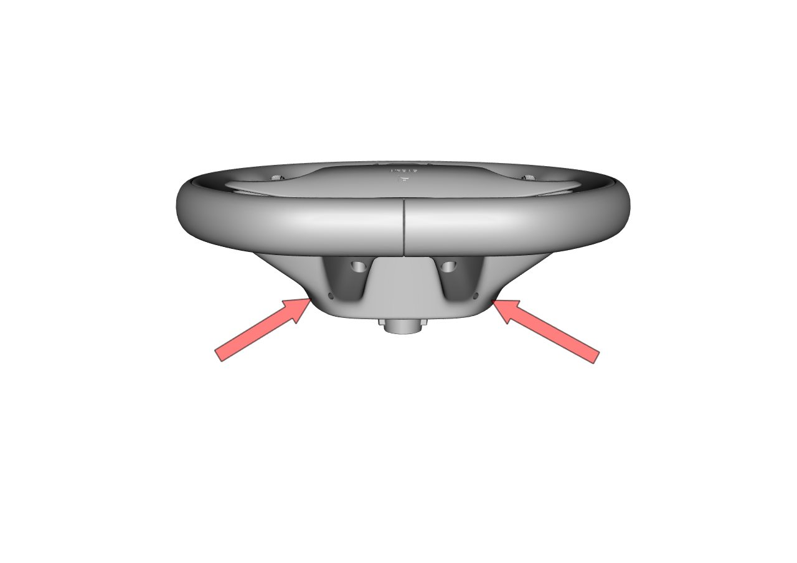
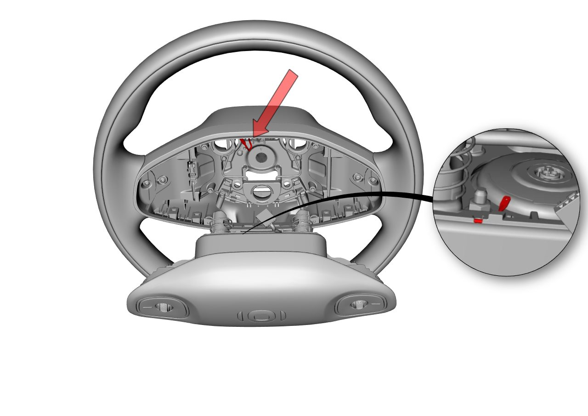
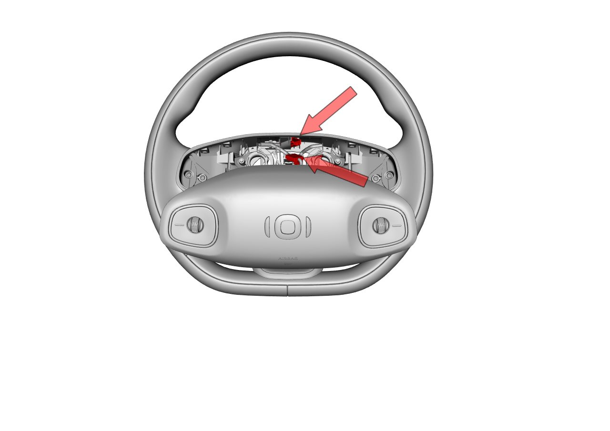
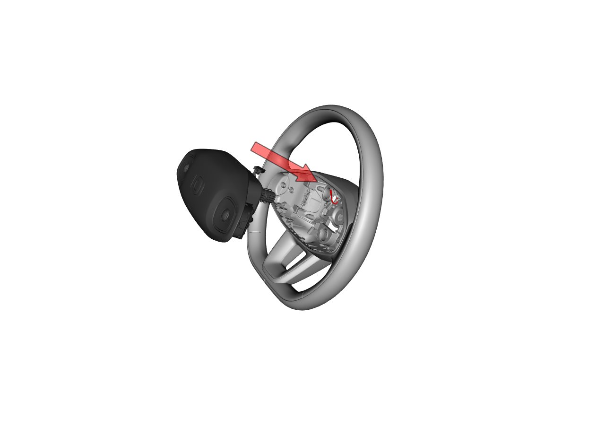

Фронтальная подушка безопасности водителя
Снятие
-
Перевести автомобиль в неподвижное состояние с выключенным питанием.
-
Вставить плоскую отвертку в демонтажные отверстия на боковой стороне нижней крышки рулевого колеса в положениях на 5 и 7 часов до упора в фиксирующую стальную пружину подушки безопасности, затем с усилием надавить внутрь, чтобы полностью освободить все крепежные штифты подушки безопасности из фиксирующей пружины.

-
Снять электрический разъем звукового сигнала

-
Снять электрический разъем многофункциональных кнопок

-
Плоской отверткой поддеть вторичный фиксатор и снять электрический разъем подушки безопасности.

Установка
-
Подсоединить электрический разъем Фронтальная подушка безопасности водителя.
-
Подсоединить электрический разъем звукового сигнала
-
Подсоединить электрический разъем многофункциональных кнопок
-
Сориентировать три крепежных штифта Фронтальная подушка безопасности водителя по трем монтажным отверстиям в рулевом колесе и с усилием нажать.

-
Покачать Фронтальная подушка безопасности водителя для проверки правильности установки и проверить равномерность зазоров по периметру.